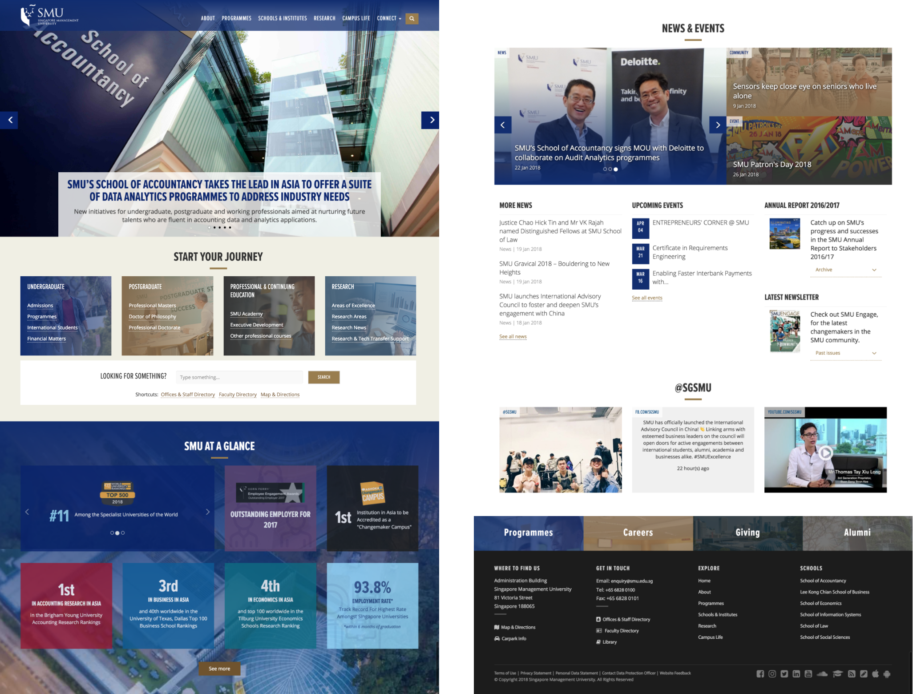
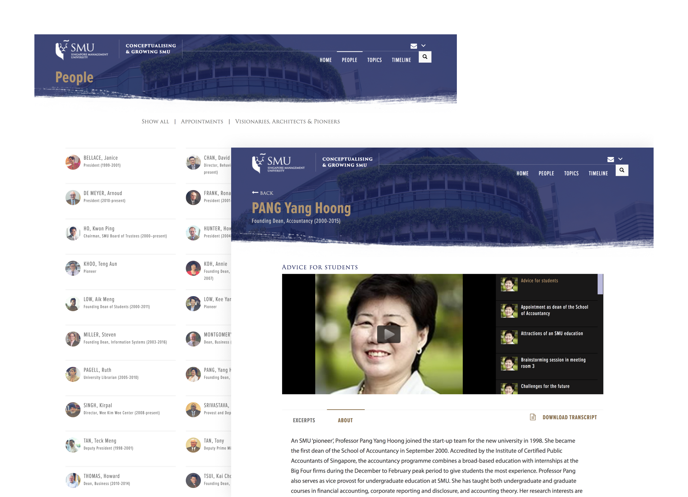
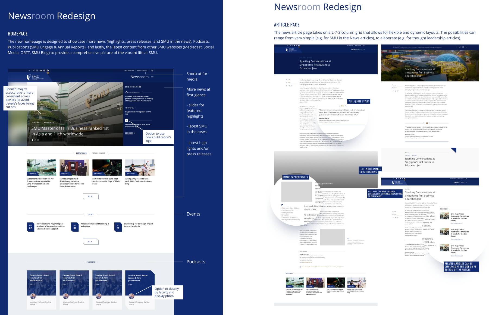

2017 — 2018 ✴ Web design, Mobile app UI design
Singapore Management University
SMU is one of Singapore's leading universities. In December 2017, I was fortunate to join the Web and Media team as their sole web UX designer. Here are some selected projects I've worked at during my time at SMU.
Next web
A huge part of my responsibility was redesigning SMU's public-facing websites for better brand consistency and user experience. Some of the redesigned sites include SMU's main website, the six (6) schools sites, the Bachelor degrees microsite of each school.
Oral History site refresh
The Oral History website houses a collection of the personal stories and ideas by those involved in planning and shaping SMU. The website was built 5 years earlier on Wordpress. Since the team is migrating it to Drupal, we used this opportunity to refresh its design.

Alumni App
With this new mobile app, SMU Alumni now have their own digital alumni card to enjoy privileges and discounts, view and join upcoming events, search for career opportunities, and more.
Newsroom
I was tasked to create initial design explorations for a redesign of SMU's newsroom. The redesign aimed to showcase more types of content (e.g. podcasts, downloadable PDFs, blogposts, research news) from various SMU websites.
